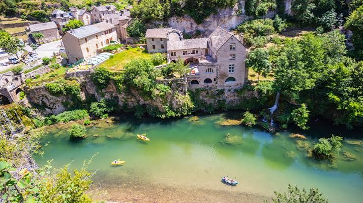
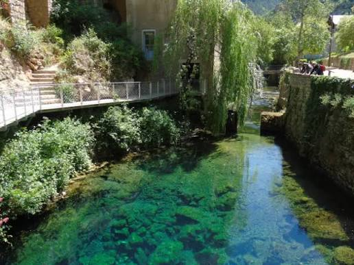

Sainte-
Enimie


⟹ Plus Beaux Villages de France ⟸
Le village doit son nom à Énimie, princesse mérovingienne du VIIe siècle, fille du roi Clotaire II et sœur de Dagobert Ier. Selon la légende, elle aurait prié Dieu de lui ôter sa beauté pour échapper à un mariage forcé et fut atteinte de lèpre. Un ange lui indiqua alors de se rendre à la fontaine de Burle, à Burlatis — l'ancien nom du lieu.

En se baignant dans la source, la princesse recouvra miraculeusement sa beauté, mais son mal revenait dès qu'elle tentait de quitter les lieux. Comprenant que Dieu l'appelait à demeurer en ce lieu, elle y vécut en ermite et entreprit d'évangéliser la région, fondant un monastère sur les hauteurs du village.
Ce monastère bénédictin, dont il subsiste aujourd'hui une chapelle et une salle capitulaire, devint un centre spirituel majeur et donna naissance au village qui s'est ensuite développé le long des berges du Tarn, dans ses ruelles pavées de galets de la rivière.

Devenu haut lieu de pèlerinage puis de tourisme, Sainte-Enimie a conservé son architecture homogène de calcaire et ses toits de lauze, ce qui lui vaut aujourd'hui d'être classé parmi les Plus Beaux Villages de France, au cœur du Grand Site des Gorges du Tarn.
Une résurgence karstique : la Burle est une exsurgence de type vauclusien, l'un des points d'émergence majeurs de l'hydrogéologie du causse de Sauveterre, avec un débit constant et généreux.
Au cœur de la légende : c'est dans cette eau que la princesse Enimie aurait recouvré sa beauté et sa santé, avant de comprendre que son destin était de demeurer sur ce site miraculeux.
Un site réhabilité : la commune a entrepris, avec l'aide de plongeurs spéléologues lozériens, la réhabilitation de la source afin d'en préserver les particularités géologiques et historiques.
Un parcours accessible : un chemin sur pilotis de bois installé en contrebas du village permet aujourd'hui d'effectuer un tour complet autour de la résurgence.
Adresse Village de Sainte-Enimie, 48210 Sainte-Enimie.
Village accès libre toute l'année, à parcourir à pied dans les ruelles pavées de galets.
Source de Burle accessible librement en contrebas du village, via le chemin sur pilotis.
Accès au cœur des Gorges du Tarn, par la route départementale D907B ; parkings à l'entrée du village.